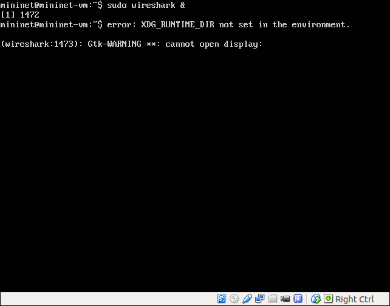
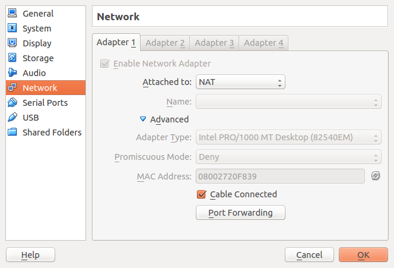
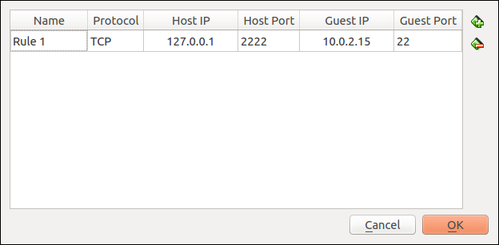

Redes de Computadores 2 - Prof. Ricardo da Rocha
</p>
<h1>Laboratório: Introdução ao <strong><code>mininet</code></strong> com avaliação TCP e UDP</h1>
<h1>Objetivos</h1>
<ul>
<li>Introduzir a ferramenta de emulação de redes <code>mininet</code> de maneira a tornar os alunos aptos a realizarem os próximos laboratórios da disciplina.</li>
<li>Compreender a arquitetura de funcionamento do <code>mininet</code>.</li>
</ul>
<h1>Pré-requisitos</h1>
<p>Se você for realizar os experimento na sua própria máquina, você deve ter o Virtual Box instalado, ou outro ambiente para execução de máquina virtual.</p>
<h1>Visão Geral</h1>
<p>Neste laboratório, nós iremos aprender o propósito e funcionamento básico da ferramenta <code>mininet</code> que seja a principal ferramenta para os demais laboratórios da disciplina. Essas tarefas são baseadas no tutorial do mininet descrito em <a href="http://mininet.org/walkthrough/">http://mininet.org/walkthrough/</a>.</p>
<h1>Recursos</h1>
<ul>
<li><p><a href="pdf/mininet-intro.pdf">Slides utilizados no laboratório</a></p></li>
<li><p>Máquina Virtual utilizada nos experimentos, inclui o sistema <code>mininet</code> (ver em <a href="https://github.com/mininet/mininet/wiki/Mininet-VM-Images">mininet.org</a>).</p>
<ul>
<li>A VM ficará disponÃvel no laboratório em um servidor web na máquina pessoal do professor no endereço IP indicado em sala, porta 8888 e caminho <strong><code>vmlab.zip</code></strong>. Você poderá baixar usando o comando <strong><code>wget http://ip.maq.professor:8888/vmlab.zip</code></strong>. A VM é um Ubuntu 14.04 - 64 bit (com Mininet 2.2.1).</li>
</ul></li>
<li><p>Na VM com mininet, tanto o login como a senha são <code>mininet</code>.</p></li>
</ul>
<h1>Tarefas</h1>
<p>As tarefas de 1 a 7 referenciam os comandos abaixo, identificados pelo seu número. Quando iniciado com prefixo <code>$</code>, um comando indica que está sendo executado no prompt do Linux (VM), enquanto que se iniciado com <code>mininet &gt;</code>, o comando está sendo executado no ambiente mininet.</p>
<pre><code>$ sudo mn #1
mininet&gt; nodes #2
mininet&gt; net #3
mininet&gt; h1 ifconfig -a #4
mininet&gt; h1 ping -c 1 h2 #5
mininet&gt; pingall #6
mininet&gt; iperf #7
$ sudo mn --topo single,3 #8
$ sudo mn --topo linear,4 #9
$ sudo mn --link tc,bw=100,delay=5ms #10
$ iperf -c 10.0.0.2 #11
$ iperf -s #12
mininet&gt; xterm h1 h2 #13
</code></pre>
<ol>
<li>Instale a VM com o mininet na sua estação, inicialize a máquina e entre no sistema.</li>
<li>Inicie o mininet com a topologia padrão (#1). Verifique os nós e a conectividade entre eles (2,3).</li>
<li>Utilize o comando <code>ifconfig</code> para identificar a configuração da rede de cada nó-estação (4).</li>
<li>Teste a conectividade entre os nós utilizando <code>ping</code> (5) e <code>pingall</code> (6).</li>
<li>Teste o desempenho da comunicação TCP e UDP entre os nós usando <code>iperf</code> e <code>iperfudp</code> (7).</li>
<li>Refaça os testes acima configurando uma topologia de comunicação <strong>single</strong> com 3 nós (8), e <strong>linear</strong> com 4 nós (9).</li>
<li>Refaça os testes de desempenho de comunicação TCP, UDP e ping, usando uma configuração de nós com largura de banda 100Mbps e atraso de 5ms (10). Meça os atrasos entre os nós e a taxa de transferência.</li>
<li>Refaça os testes de desempenho anteriores, invocando o comando <code>iperf</code> em um terminal (<code>xterm</code>) individual em cada nó/estação. Uma estação deverá ser um servidor <code>iperf</code> (12) e outra o cliente (11). Para abrir um terminal para cada nó você deverá usar o comando <code>xterm</code> (13), e você deverá configurar o seu ambiente Virtual Box, mininet e estação host, conforme explicado na seção <a href="#execucao-do-wireshark-e-terminal-remoto">"Execução do wireshark e terminal remoto"</a>.</li>
</ol>
<h2>Submissão do laboratório</h2>
<p>Você deverá submeter um arquivo <code>Lab1.2-7.txt</code> (arquivo de texto) contendo o resultado dos testes realizados na tarefa (7). <strong>Observe que</strong> para facilitar a obtenção dos resultados, você deverá acessar o mininet por terminais remotos (exibidos no seu ambiente host).</p>
<!--
Caso você tenha problemas no uso do teclado com o mininet (caracteres mostrados não correspondem aos do teclado), seja a seção [*"Configuração do teclado"*](#configuracao-teclado) abaixo.
-->
<p><a id="execucao-do-wireshark-e-terminal-remoto"></a></p>
<h2>Execução do wireshark e terminal remoto</h2>
<p>Na execução do wireshark (ou do terminal <code>xterm</code>), provavelmente você se deparará com o erro da figura abaixo.</p>
<p></p>
<p>Esse problema ocorre porque o wireshark pretende exportar (exibir) a sua interface gráfica (X11) na estação anfitriã que abriga a VM em execução, ao invés na máquina virtualizada (que não contém suporte a GUI). O sistema X11, utilizado em muitos sistemas operacionais baseados em Unix, permite que um programa exiba a sua interface em outra estação, oferecendo para tal um protocolo próprio de rede. A comunicação entre a VM e a estação será intermediada pelo SSH que é um serviço de terminal remoto que utiliza criptografia. Para que isso seja possÃvel é necessário atender aos seguintes pré-requisitos:</p>
<ol>
<li>VM precisa executar um servidor SSH, que será contactado pelo estação.
<ul>
<li>Na VM mininet isso já é garantido por padrão.</li>
</ul></li>
<li>A estação anfitriã precisa dispor de um cliente SSH para contactar o servidor na VM.
<ul>
<li>Em qualquer distribuição Linux isso já é satisfeito. Em estações Windows, você precisará realizar uma instalação adicional (não coberta nesse laboratório).</li>
</ul></li>
<li>A estação anfitriã precisa dispor de um servidor X11.
<ul>
<li>Em qualquer distribuição Linux com interface gráfica isso já é satisfeito. Em estações Windows, você precisará realizar uma instalação adicional (não coberta nesse laboratório), sendo sugerido o uso do cygwin/x (<a href="http://www.cygwin.com/">http://www.cygwin.com/</a> e <a href="http://x.cygwin.com/">http://x.cygwin.com/</a>).</li>
</ul></li>
<li>No seu player de máquina virtual, vamos usar VirtualBox, precisará configurar a rede da VM para permitir acessibilidade externa a serviços locais (escutando por uma porta) e para isso precisaremos fazer um <em>port forwarding</em>.
<ul>
<li>Na configuração de <strong>network</strong> da VM, clique em <em>"Port forwarding"</em> (veja figura).</li>
</ul></li>
</ol>
<p></p>
<ul>
<li>Crie uma regra de encaminhamento de portas adequado. No exemplo da figura, escolhi o encaminhamento da porta da estação anfitriã 2222 para a porta 22 da VM, que é a porta onde o servidor SSH da VM estará esperando conexões. A porta 2222 é um exemplo e outra porta pode ser escolhida, mas <strong>necessariamente</strong> a mesma porta deverá ser usada no comando do item seguinte.</li>
</ul>
<p></p>
<ul>
<li><p>Para estabelecer a conexão SSH com o servidor, será necessário executar o seguinte comando</p>
<pre><code>ssh -X mininet@127.0.0.1 -p 2222
</code></pre></li>
<li><p>Agora, você conseguirá executar o wireshark no mininet, exibindo a sua interface na sua estação (anfitriã), executando (no terminal criado anteriormente):</p>
<pre><code>sudo wireshark &amp;
</code></pre></li>
</ul>
<p>Para iniciar o wireshark no ambiente de um dos hosts virtualizados, você deve abrir um terminal naquele respectivo host, via mininet. Por exemplo, para abrir um terminal para o host <code>h1</code>, use o seguinte comando de dentro do mininet:</p>
<pre><code> xterm h1
</code></pre>
<p>Documentação detalhada sobre esse problema e sua solução pode ser encontrada em <a href="https://github.com/mininet/mininet/wiki/FAQ#x11-forwarding">https://github.com/mininet/mininet/wiki/FAQ#x11-forwarding</a>.</p>
<h3>Problemas comuns</h3>
<ul>
<li>Se algumas teclas não estão funcionando corretamente (exemplo: <code>/</code>), reconfigure o teclado utilizando o comando <code>sudo dpkg-reconfigure keyboard-configuration</code>.</li>
</ul>
<h1>Referências</h1>
<ul>
<li><code>mininet</code>: <a href="http://mininet.org/">http://mininet.org/</a>
<ul>
<li>Documentação
<ul>
<li><a href="https://github.com/mininet/mininet/wiki/Introduction-to-Mininet">Introdução ao Mininet</a></li>
<li>Demonstração de comandos mininet: <a href="http://mininet.org/walkthrough/">http://mininet.org/walkthrough/</a></li>
<li>Comandos (interface não programada): <a href="http://mininet.org/walkthrough/#part-3-mininet-command-line-interface-cli-commands">http://mininet.org/walkthrough/#part-3-mininet-command-line-interface-cli-commands</a></li>
<li>Iniciando com o Mininet (incluindo download): <a href="http://mininet.org/download/">http://mininet.org/download/</a></li>
<li>Encaminhamento da interface gráfica das aplicações na VM (forwarding X11): <a href="https://github.com/mininet/mininet/wiki/FAQ#x11-forwarding">https://github.com/mininet/mininet/wiki/FAQ#x11-forwarding</a></li>
</ul></li>
</ul></li>
<li><code>traceroute</code> (no Windows <code>tracert</code>): o capÃtulo 1 do livro do Kurose oferece uma explicação sobre a ferramenta.</li>
<li><code>iperf</code>
<ul>
<li><a href="http://iperf.sourceforge.net/">http://iperf.sourceforge.net/</a></li>
<li><a href="http://pt.wikipedia.org/wiki/Iperf">http://pt.wikipedia.org/wiki/Iperf</a></li>
<li><a href="http://labcisco.blogspot.com.br/2013/04/iperf-no-monitoramento-de-desempenho-em.html">http://labcisco.blogspot.com.br/2013/04/iperf-no-monitoramento-de-desempenho-em.html</a></li>
</ul></li>
<li><code>httperf</code>
<ul>
<li>Mosberger, David, and Tai Jin. <a href="http://www.hpl.hp.com/research/linux/httperf/wisp98/httperf.pdf">"httperf - a tool for measuring web server performance."</a> ACM SIGMETRICS Performance Evaluation Review 26.3 (1998): 31-37.</li>
<li><a href="http://www.comlore.com/httperf.html">http://www.comlore.com/httperf.html</a></li>
<li><a href="http://mervine.net/performance-testing-with-httperf">http://mervine.net/performance-testing-with-httperf</a></li>
</ul></li>
<li>Discussão geral de ferramentas de teste de desempenho
<ul>
<li><a href="http://kb.pert.geant.net/twiki/bin/view/PERTKB/IperfTool">http://kb.pert.geant.net/twiki/bin/view/PERTKB/IperfTool</a></li>
</ul></li>
<li><code>sudo apt-get install x11-xkb-utils</code></li>
</ul>
<p>